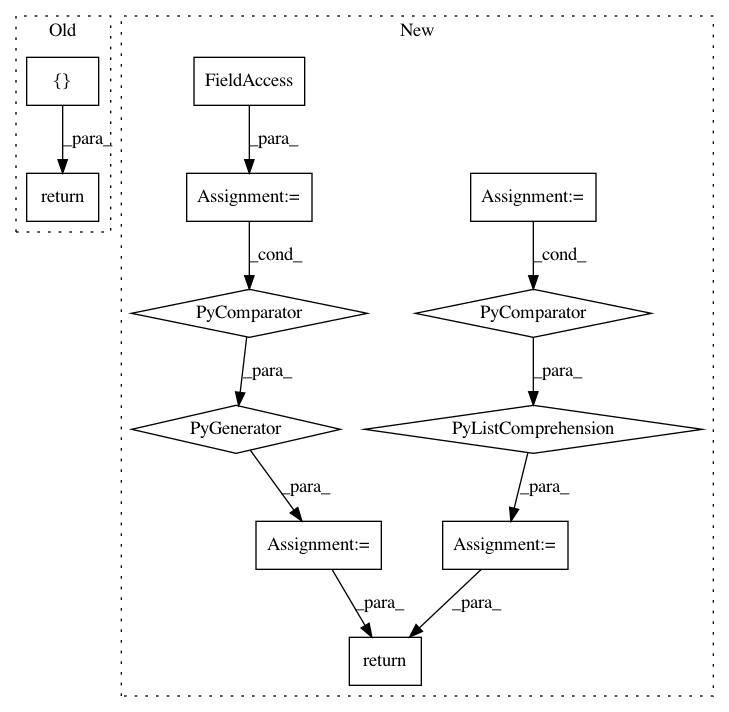

7e0e9b744c1c307d3e42f8feae764ee090fad1ce,src/skmultiflow/meta/dynamic_weighted_majority.py,DynamicWeightedMajority,predict,#DynamicWeightedMajority#Any#,108
Before Change
numpy.ndarray
A numpy.ndarray with the label prediction for all the samples in X.
return np.array([np.argmax(self.predict_proba(X))])
def predict_proba(self, X):
predict_proba
After Change
numpy.ndarray
A numpy.ndarray with the label prediction for all the samples in X.
preds = np.array([np.array(exp.estimator.predict(X)) * exp.weight
for exp in self.experts])
sum_weights = sum(exp.weight for exp in self.experts)
return np.sum(preds / sum_weights, axis=0, dtype=int)
def predict_proba(self, X):
raise NotImplementedError
In pattern: SUPERPATTERN
Frequency: 3
Non-data size: 12
Instances
Project Name: scikit-multiflow/scikit-multiflow
Commit Name: 7e0e9b744c1c307d3e42f8feae764ee090fad1ce
Time: 2019-04-08
Author: andrecruz97@gmail.com
File Name: src/skmultiflow/meta/dynamic_weighted_majority.py
Class Name: DynamicWeightedMajority
Method Name: predict
Project Name: OpenNMT/OpenNMT-py
Commit Name: 685126644ae540be72eb662527269a0395e2c9eb
Time: 2017-09-05
Author: bpeters@coli.uni-saarland.de
File Name: onmt/IO.py
Class Name:
Method Name: make_features
Project Name: scikit-multiflow/scikit-multiflow
Commit Name: 25723006dbd088a24215b23242e55d06e12afd8e
Time: 2019-04-14
Author: andrecruz97@gmail.com
File Name: src/skmultiflow/meta/additive_expert_ensemble.py
Class Name: AdditiveExpertEnsemble
Method Name: predict